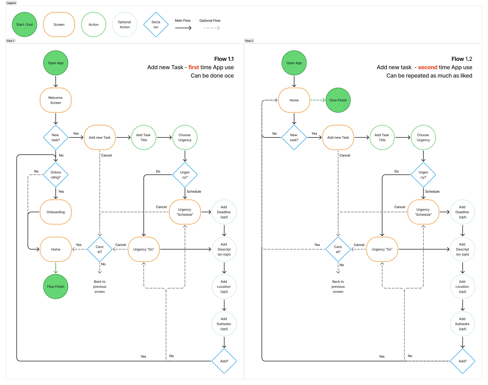

LITTLE WINS

The Problem
Most to-do apps are overloaded with features, which can feel overwhelming, especially for people recovering
from burnout who need a gentle way to ease back into daily tasks.
The Goal
Create a simple and supportive to-do app that helps users rebuild their productivity without pressure.
My Role
I led every aspect of this project from start to finish.
The Setup
This project took place during an intensive, week-long UX/UI advanced workshop, with a total workload of roughly
20 hours on this project.
I started by diving into the mindset of people who’ve experienced burnout, specifically those who want to slowly reintroduce structure and productivity into their lives without feeling overwhelmed. At first, I assumed they needed simpler tools, but I soon realized it was more about feeling safe, not pressured.
To dig deeper, I:
Aggressive Reminders:
Add pressure instead of encouragement
Too Many Tasks:
Seeing long lists can feel overwhelming
Cold Interfaces:
Most to-do apps feel transactional, lacking emotional support
Fear of Falling Behind:
Metrics can worsen guilt during slow days
Aggressive Reminders:
Add pressure instead of encouragement
Too Many Tasks:
Seeing long lists can feel overwhelming
Cold Interfaces:
Most to-do apps feel transactional, lacking emotional support
Fear of Falling Behind:
Metrics can worsen guilt during slow days
Using these insights, I developed three ad hoc personas, but focused on the main persona - Nina - for further development.

To focus my design efforts, I created user stories, scenarios, storyboards and empathy maps, leading to the definition of my Point-of-View (POV) statement.
The app should feel non-pressuring, without complicated settings or priority metrics.
I identified "create a new task” to be the main user flow, which I designed to be the centerpiece of the app.
My main challenge was breaking free from the typical feature-heavy mindset of productivity apps. Without realizing it, I added too many features, which contradicted the needs of my users. I began stripping away features to make the design simpler.
For the wireframes, I focused on the main user flow - create a new task - and incorporated an option to add a location. This was the most requested feature during my informal interviews, as many people felt that knowing where a task needed to happen helped them plan their days.
At this stage, I ran three usability tests with my wireframes to check if the process felt intuitive and whether the initial spacing and sizing worked for my app. Through this early testing, I uncovered two key issues:
To address the first issue, I reduced the urgency options to just “do” and “schedule” and removed the "Show More" option. Only when the corresponding urgency is selected, additional fields appear. For example, if you select "schedule", you can then choose a deadline, but not if you select "do".

This not only clarified the flow but also stayed true to the app’s goal of reducing the overwhelming number of choices.
After one week, I was able to create the main user flow for this app. My biggest challenge was balancing a simple yet visually appealing user interface that truly supports my potential users in reaching their goals. Due to time restrictions, I’ve noted several future improvements to explore, that I was not able to implement yet:
Animations
Implement subtle animations that reinforce a sense of encouragement
Filtering
Explore ways to filter existing tasks
Personalization
Allow small personal touches, like choosing colours
Gentle reminders
Test soft, customizable reminders that help nudge users without pressure
Animations
Implement subtle animations that reinforce a sense of encouragement
Filtering
Explore ways to filter existing tasks
Personalization
Allow small personal touches, like choosing colours
Gentle reminders
Test soft, customizable reminders that help nudge users without pressure